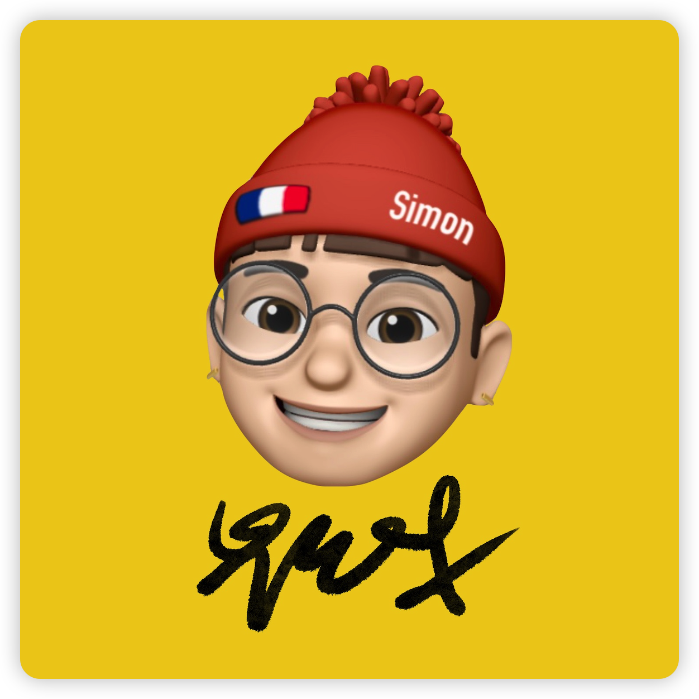

CUI Xiaohua
Étudiant en Master de l'Université des Langues et Cultures de Pékin, sous la direction de Wang Xiuli.

Gemma Felton
Gemma, venant de l'Afrique du Sud - un pays qui a 11 langues officiels, a toujours été intéressée par les langues. En plus de l'anglais, sa langue maternelle, elle est aussi billingue en français après avoir passé 6 ans en France. Dans le cours de sa vie, elle s'est intéressée aussi à : l'afrikaans, le xhosa, l'espagnol et l'italien. Elle a fait une licence en Sciences du Langage : mention Langage, Cognition et Numérique à l'Université de Paris Nanterre. Gemma s'est dirigée ensuite vers le Master Plurital - Traitement Automatique des Langues, qui combine son amour des langues et de l'informatique.

Tannina Hamizi
Tannina, baignée depuis petite dans l'environnement numérique, informatique et son gout pour les langues avec une double nationalité française algérienne. Elle a pu être bercer au quotidien par de nombreuses langues telles que le kabyle, l'arabe algérien ou encore l'espagnol depuis un peu plus de 10 ans. Elle trouve sa voix en allant en licence Sciences du Langage : mention Langage, Cognition et Numérique à l'Université de Paris Nanterre qui la guide au Master Plurital - Traitement Automatique des Langues, lui permettant d'associer ces deux appétences.